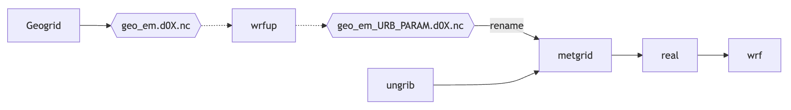

Usage
wrfup is primarily used through its command-line interface (CLI) to work with WRF geo_em files.
Basic Command Structure
You can use wrfup to calculate and ingest the URB_PARAM or FRC_URB2D fields directly into WRF’s geo_em files.
To calculate and ingest URB_PARAM fields:
wrfup geo_em.d0X.nc URB_PARAM --work_dir YOUR_DIRECTORY
To calculate and ingest FRC_URB2D fields:
wrfup geo_em.d0X.nc FRC_URB2D --work_dir YOUR_DIRECTORY
Options:
geo_em.d0X.nc: The WRF geo_em file for the target domain (replace X with domain number).
–work_dir: Specify the directory where intermediate and final files will be stored.
Example Use Case
Let’s say you’re working on an urban climate simulation for a specific city. After downloading the necessary urban morphology data, you’d want to insert that data into the WRF model:
Prepare your geo_em.d0X.nc file.
Run the following command to compute the URB_PARAM field:
wrfup geo_em.d03.nc URB_PARAM --work_dir /path/to/working_directory
The modified geo_em file with the updated URB_PARAM fields will be saved in your specified directory as: geo_em_URB_PARAM.d03.nc
This file now includes the computed URB_PARAM fields and can be used for further steps in the WRF simulation process.
If you’d like to now compute the FRC_URB2D (urban fraction) field, you can simply run the same command with the new file:
wrfup geo_em_URB_PARAM.d03.nc FRC_URB2D --work_dir /path/to/working_directory
This will calculate the FRC_URB2D field and save it as: geo_em_URB_PARAM_FRC_URB2D.d03.nc
Remember: It’s important to rename the file appropriately after processing. After all the necessary fields are added, you can rename the final file to the standard geo_em.d03.nc for running metgrid:
mv geo_em_FRC_URB2D.d03.nc geo_em.d03.nc
You can now proceed with the WRF preprocessing steps like metgrid, real.exe, and wrf.exe.
Workflow Diagram
The following diagram shows how wrfup integrates into the WRF preprocessing workflow:
As shown, wrfup modifies the geo_em files by injecting urban parameters, after which the workflow continues with metgrid, real, and wrf.exe.